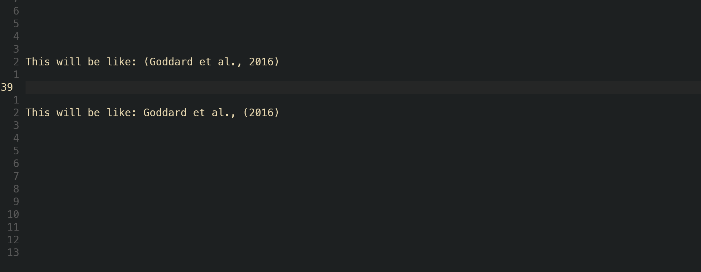
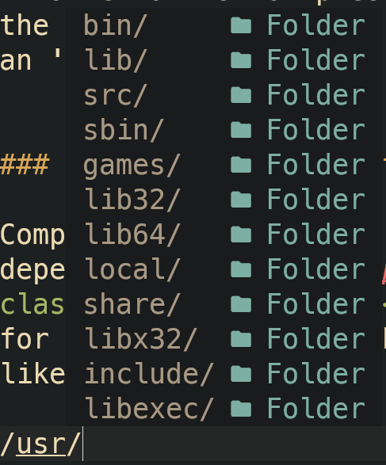
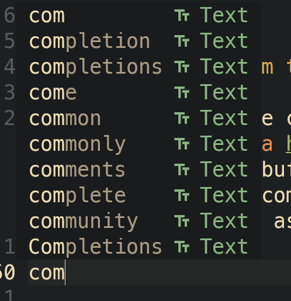
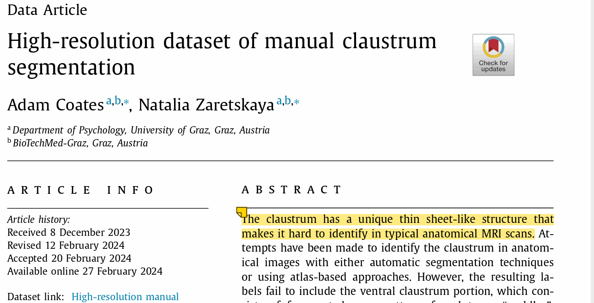
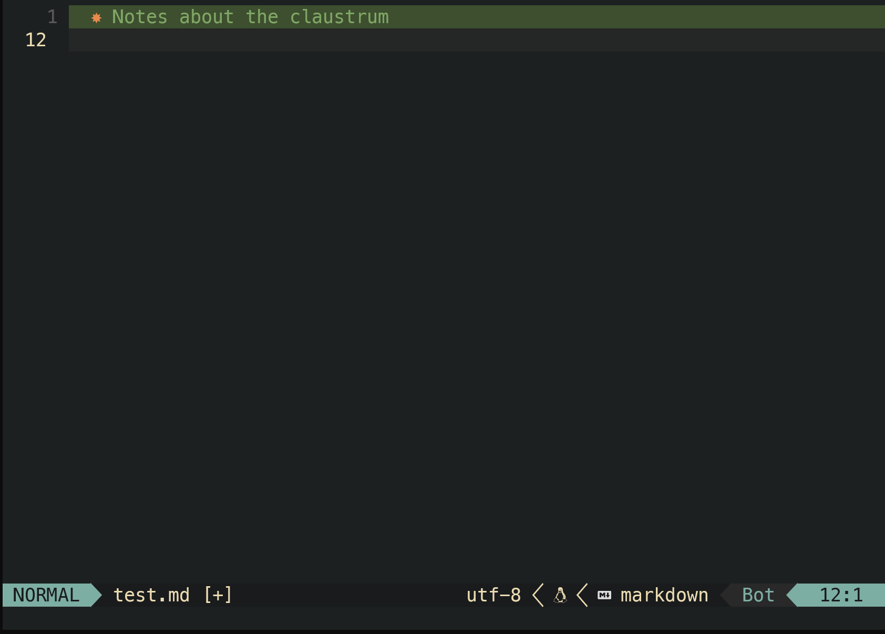
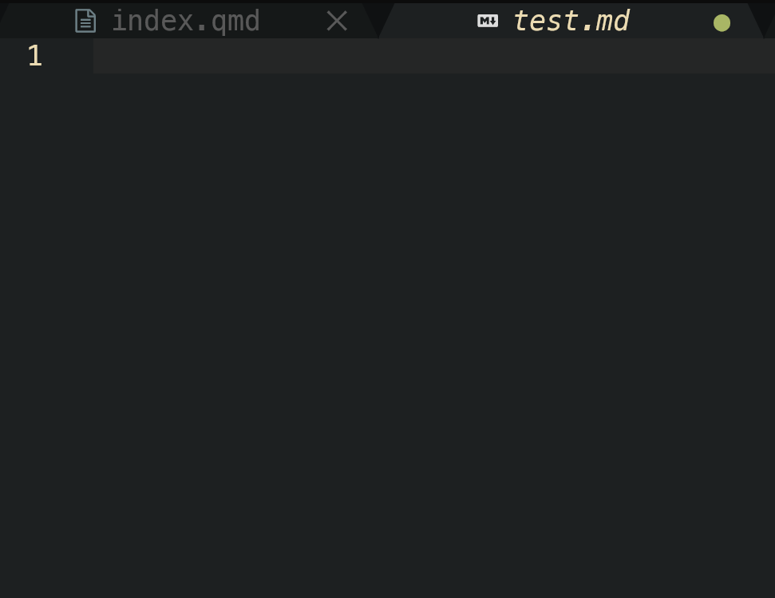
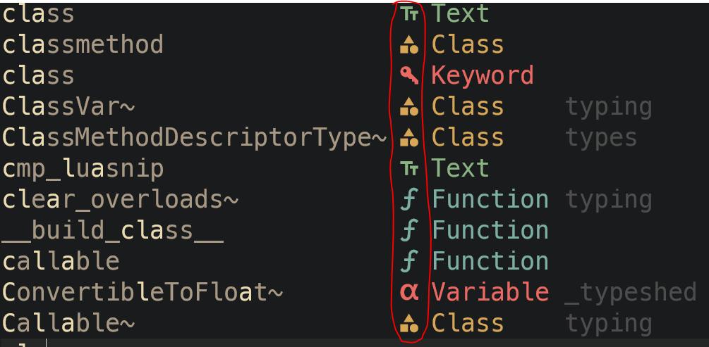

What language server protocols are?
Neovim, VScode, Sublime Text or emacs, all use something called language server protocols (LSPs). LSPs are “language intelligence tools” and essentially offer your code editor of choice a way to know
- what coding language you’re currently editing in
- which documentation to provide for said language
- how to auto complete in said language
For example, if you wanted to create some Python code, how can you speed up the process of writing code.
Think of LSPs as kind of like a smart dictionary.
Neovim’s code completion system
Of course, with Neovim there are a bunch of different types of plugins that you can use, some of which achieve the same kind of functionailty but with slightly different features.
However, for the setup that I use, I use nvim-cmp which is a completion engine plugin. This means that essentially I can provide nvim-cmp a list of sources in which I want to use to carry out autocompletion.
I use another plugin called cmp-nvim-lsp and this is specifically used for LSP completions that I will talk about in the next blog here.
These include:
- snippets (including my own snippets)
- completions from path I’m writing
- completions from current document (if a document contains a word then a text completion is available)
- Zotero reference snippets (useful for academic writing)
- completions from LSPs
This sounds like a lot, and it probably is therefore, I think for the purpose of the blog, this will be split into two parts. This part will explain and show the part of my configuration that carries out completion from non-LSP sources. In the next blog, I talk about how to install and manage LSP sources and how to implement them as part of autocompletion.
Snippets
Snippets are great. Have you ever started to write a for loop in bash and then switch to Python and forget the correct syntax for a for loop? Or have you ever wanted to define a function in R only to forget how to do the exact same in bash?
This is where snippets come in handy. I always forget for instance how to construct a proper table in markdown. I hardly ever remember how to do that.
Let’s start by looking at the first few lines of code for this plugin and then to look at how my snippets are set up and finally how I have defined by own snippets.
return {
"hrsh7th/nvim-cmp",
-- event = "VeryLazy",
dependencies = {
"hrsh7th/cmp-buffer", -- source for text in buffer
"hrsh7th/cmp-path", -- source for file system paths
"L3MON4D3/LuaSnip", -- snippet engine
"saadparwaiz1/cmp_luasnip", -- for autocompletion
"rafamadriz/friendly-snippets", -- useful snippets
"onsails/lspkind.nvim", -- vs-code like pictograms
"jalvesaq/cmp-zotcite",
},Here you’ll notice that I am using Lazy.nvim as my neovim plugin manager of choice (a topic for another blog).
In this .lua file I use the plugin “nvim-cmp” as an autocompletion engine that depends upon several other plugins. For example, the “friendly-snippets” plugin is used to be able to use the community driven snippets that others have made for a whole range of coding languages.
config = function()
local cmp = require("cmp")
local luasnip = require("luasnip")
local lspkind = require("lspkind")
_G.LuaSnipConfig = {}
-- Helpers
function _G.LuaSnipConfig.visual_selection(_, parent)
return parent.snippet.env.LS_SELECT_DEDENT or {}
end
function _G.LuaSnipConfig.intext_cite(_, parent)
local selected_text = parent.snippet.env.LS_SELECT_DEDENT or {}
local extracted_names = {}
for _, text in ipairs(selected_text) do
-- Extract the portion of the text after #
local substring = text:match("#(.+)")
if substring then
-- Replace "Etal" or "Et al." with "et al."
substring = substring:gsub("_Etal_", " et al.,")
substring = substring:gsub("_Et al%.", " et al.,")
-- Remove any numbers after "et al."
substring = substring:gsub(" et al%..*", " et al.,")
-- Truncate at the last occurrence of a number
local truncated = substring:gsub("_%d+$", "")
-- Split by underscores and add to extracted_names
local names = {}
for name in truncated:gmatch("([^_]+)") do
table.insert(names, name .. " ") -- Add a space at the end of each name
end
-- Check if "etal" is present
local has_etal = string.find(truncated, "etal")
-- Concatenate names without "and" if "etal" is present
if has_etal then
table.insert(extracted_names, table.concat(names))
else
-- Concatenate names with "and" if there are more than one
if #names > 1 then
table.insert(extracted_names, table.concat(names, "and "))
else
table.insert(extracted_names, names[1])
end
end
end
end
return extracted_names
endWe then call the configuration function for cmp, luasnip and lspkind (this is a standard in neovim plugins to ensure proper setup of the plugins)
I then define two helper functions. Now, these functions are particularly useful for Zotero completions. For instance, when referencing in APA-style it is common to use both a direct in-text reference and an indirect in-text reference. These helper functions are used alongside, my own defined snippets that allows me to change from an indirect to a direct reference.
It’s relatively straightforward. The first helper function _G.LuaSnipConfig.visual_selection(_, parent): declares a function named visual_selection within the Lua global environment (G). The function takes two arguments: (an underscore indicating an unused variable, commonly used in Lua to indicate that a function argument is not used) and parent. return parent.snippet.env.LS_SELECT_DEDENT or {}: This line returns the value of parent.snippet.env.LS_SELECT_DEDENT if it exists, otherwise it returns an empty table {}.
The 2nd function is what the snippet uses to do said formatting. THIS IS A WORK IN PROGRESS THOUGH. For now, the function splits the string based on the ‘#’ present in the reference (see the gif below). It then splits the strings based on if an ‘etal’ is present in the reference, if it is then it ends here and just spits out the first author name plus the et al., followed by the ordinal reference surrounded by square brackets (this notation is documented by pandoc)
If an et al. is not present, then the function splits the string based on the underscores present and will instead print out the list of names with an ‘and’ inbetween them.

Completions from path
Completions from path are achieved through the use of the above dependency cmp-path This is relatively straightforward and allows for autocompletion of a path anywhere within the current buffer and look simply like this:

Completions from the current buffer
A buffer is just nvims fancy name for the currently opened document.
Completions from the current buffer are achieved through another dependency called cmp-buffer Again, this is relatively straightforward and allows for autocompletion of any words currently contained within the buffer that show up as text completion:

Zotero completions
As we saw above, zotero completions are an additional possibility as a source for completion. Zotero saves all references as an sqlite database. Basically each reference has its own random character & number string. Then it’s possible to just search this database based on the keywords from the title or the name of the authors and return a list of possible matches. This is possible with a pair of plugins. The first is a dependency to the nvim-cmp plugin called cmp-zotcite this dependency works with the completion plugin directly (nvim-cmp) to give you a popup list without having to call the omni-completion keybinding ctrl+X ctrl+O.
Then there is an additional plugin that works as the backend to the dependency that really does the sqlite database search and format into a pandoc way. This is useful particularly in markdown-type files or for note taking since this plugin also offers a way to extract zotero annotations directly from articles.
Here is the configuration for zotero.lua:
return {
"jalvesaq/zotcite",
dependencies = {
"jalvesaq/cmp-zotcite",
},
}Here is an example of the annotation part of the plugin:
 
The rest of the lua file
The rest of the nvim-cmp.lua file is really related to how the plugin should actually work.
local check_back_space = function()
local col = vim.fn.col('.') - 1
if col == 0 or vim.fn.getline('.'):sub(col, col):match('%s') then
return true
else
return false
end
endHere I define what pressing the backspace actually does. For instance, when a snippet is loaded, the backspace operates to go back in the queue of the number of autofill gaps
For example in bash:
#bash for loop snippet. When the snippet is loaded
# the backspace will go backwards to fill in the gaps
# between the for, in and ;do.
for in ;do
done
require("luasnip.loaders.from_vscode").lazy_load({})
require("luasnip.loaders.from_vscode").lazy_load({ paths = './my_snippets' })
require("luasnip.loaders.from_lua").lazy_load({ paths = './lua_snippets' })
require("luasnip").config.setup({store_selection_keys="<C-s>"})
vim.api.nvim_set_keymap('i', '<C-u>', '<cmd>lua require("luasnip.extras.select_choice")()<CR>', {noremap = true})
luasnip.filetype_extend("vimwiki", {"markdown"})In this section, according to the documentation of luasnip you must require the snippets from the source that the snippets are to be loaded from. Here I also source my own snippets that I have made in the paths ./my_snippets and ./lua_snippets.
Below is an example of a snippet:
s(
{ trig = 'fm', dscr = 'Front matter' },
fmta(
[[
---
fontsize: 12pt
geometry: margin=3cm
title: <>
author: <>
date: <>
---
]],
{
i(1),
i(2, 'Adam Coates'),
p(os.date, '%d/%m/%Y'),
}
),
{ condition = line_begin }
),This snippet is an autosnippet to automatically write out a yaml header for markdown files, as such:

cmp.setup({
completion = {
completeopt = "menu,menuone,preview,noselect",
},
snippet = { -- configure how nvim-cmp interacts with snippet engine
expand = function(args)
luasnip.lsp_expand(args.body)
end,
},
mapping = cmp.mapping.preset.insert({
["<C-k>"] = cmp.mapping.select_prev_item(), -- previous suggestion
["<C-j>"] = cmp.mapping.select_next_item(), -- next suggestion
["<C-b>"] = cmp.mapping.scroll_docs(-4),
["<C-f>"] = cmp.mapping.scroll_docs(4),
["<C-Space>"] = cmp.mapping.complete(), -- show completion suggestions
["<C-e>"] = cmp.mapping.abort(), -- close completion window
["<CR>"] = cmp.mapping.confirm({ select = false }),
['<Tab>'] = cmp.mapping(function(fallback)
if cmp.visible() then
cmp.confirm({select = true})
elseif luasnip.jumpable(1) then
luasnip.jump(1)
elseif check_back_space() then
fallback()
else
cmp.complete()
end
end, {'i', 's'}),
['<S-Tab>'] = cmp.mapping(function() luasnip.jump(-1) end, {'i', 's'}),
}),
vim.keymap.set({ 'i', 's' }, '<C-s>', function()
if luasnip.expandable() then
luasnip.expand({})
end
end),The next part of the code defines some other keybinds for the actual pop-up menu. The first part of this section of code tells nvim-cmp how to display the menu and how the snippets are displayed. Then keybindings are defined for confirm, abort and for scrolling the documentation that comes up for the menu.
Finally, there is some code to define what <TAB> does. This means that if you have a snippet already selected the <tab> works to cycle through the gaps of a snippet to fill in (we saw before that backspace goes backwards through this cycle). If there is an expandable snippet then the <tab> will act to expand the snippet. If these conditions aren’t met then the <tab> works just as a regular <tab>.
-- sources for autocompletion
sources = cmp.config.sources({
{ name = "luasnip"}, -- snippets
{ name = "nvim_lsp" },
{ name = "buffer" }, -- text within current buffer
{ name = "path" }, -- file system paths
{ name = "cmp_zotcite" },
{ name = "otter" },
}),
-- configure lspkind for vs-code like pictograms in completion menu
formatting = {
format = lspkind.cmp_format({
maxwidth = 50,
ellipsis_char = "...",
}),
},
})
end,
}The final part of the configuration calls the sources that nvim-cmp should look for when actually carrying out the auto completion and the final few lines are just to get some nice pretty pictograms in the menu itself.

To be continued…
This is of course only part of what make the autocompletion so great in neovim. The whole configuration is much more than just a simple single .lua file and instead involves the interaction between other plugins too.
- In the next blog, I aim to delve a bit more deeply into this configuration by introducing Language Server Protocols (LSPs) and how completions are given on the type of document currently opened.
- For example, we don’t care about C or C++ autocompletions in a python document.